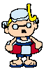
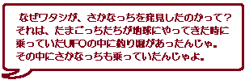
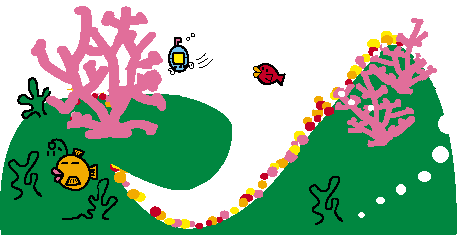

| さかなっちは地球から遠くはなれた星、たまごっち星のたまごっち海に生息する生き物です。さかなっちたちの好物はなぜか「おでん」。それぞれが秘伝のダシや具を使った独自のおでんをあみだしては、折みんなで「おでんパーティー」を開いているらしいですよ。 | |
|
さかなっちたちの棲んでいるたまごっち海は、地層のようにきれいな層のできている、深さ３７２万キロメートルの海です。海水は塩水ではなく、ジュースだったりアルコールだったりするそうです。（たまごっちカクテルと呼ぶらしい。） たまごっち海には「むしむし島」と「夏冬島」と「リゾー島」が浮かんでいて、サーフィンのメッカでもあるのだか。そして、たくわんの原産地なのだそうです。（なぜ？） |
|
| そんな不思議なたまごっち海にすんでいるのは、さかなっちたちだけではありません。そこにはさかなっちたちの天敵、白クマがいるのです。いつもは平和なたまごっち海も、白クマが現れたときだけは大騒ぎ！！のんびり居眠りなんてしていられません。 |
|  |  |
|  | |
| |
|
| |
|
| Copyright (C) BANDAI CO.,LTD.1998 All Rights Reserved. | |